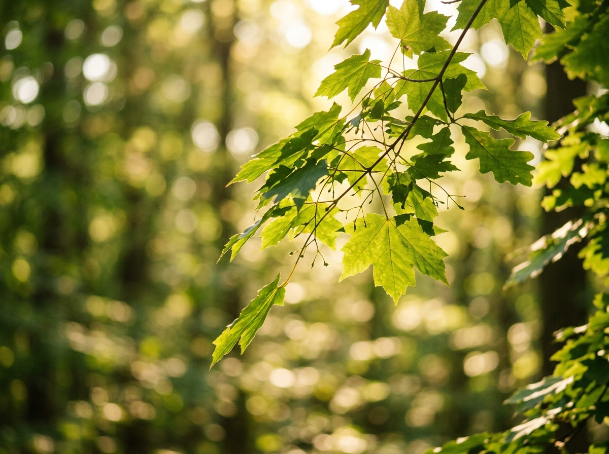

Vad är biodynamisk kraniosakralosteopati?
En introduktion till den biodynamiska synen på det kraniosakrala systemet, hur det förhåller sig till klassisk osteopati och varför behandlingsformen vinner mark bland terapeuter och patienter.
Läs mer →